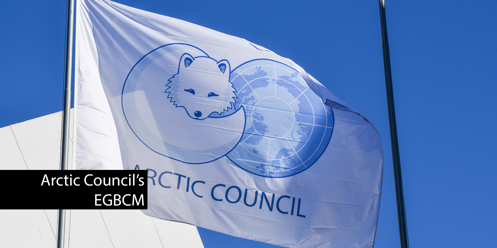

Arctic Council's Expert Group on Black Carbon and Methane
The Expert
Group on Black Carbon and Methane
(EGBCM) was established by the Arctic Council in 2015 to review, analyze, and assess progress
towards the reduction of black carbon and methane emissions across the Arctic and in regions
that influence the Arctic.
2019 Summary of Progress and Recommendations
Every two years, the EGBCM develops a report that summarizes emissions by the largest
contributing sectors and develops recommendations to policy makers on voluntary actions that
countries may wish to apply in different combinations in efforts to reduce emissions.
The report is tailored specifically for Arctic States, but the concepts are applicable to any
nation, region, or group looking to achieve reductions in methane and black carbon emissions.
Fostering Voluntary Actions
This report is expected to continue to facilitate cooperation between the Arctic States,
Permanent Participants, and Observer States in achieving methane reductions by voluntarily adopting
recommended actions while also inspiring non-Arctic States to implement similar measures.
“This second Summary of Progress and Recommendations from the Expert Group provides an overview
of the progress by Arctic States and Observer States to reduce emissions of black carbon and
methane. The summary of progress is based on national information submitted in early 2018 and,
where relevant, other available data.”
“Methane priority areas include emissions in the oil and gas sector and solid waste
disposal. Overall methane emissions in the oil and gas sector appear to have remained stable
since 2013, which may present opportunities to improve detection and reduce emissions. In
solid waste management, significant reductions have been achieved in many countries, but
waste management is still a challenge in many remote communities in the Arctic.”
Expert Group on Black Carbon and Methane:
Summary of Progress and Recommendations 2019
Recommended Actions
1. Mobile and stationary diesel-powered sources
- Reduce emissions from new diesel vehicles and engines by adopting and implementing
world-class particulate matter exhaust emission standards and ensuring widespread
availability of ultra-low sulphur fuels.
- Reduce emissions from legacy diesel vehicles and engines by adopting targeted policies and
programs.
- Reduce black carbon by stimulating the shift to alternative vehicle technologies and modes
of transportation, and through efficiency measures.
- Develop, as appropriate, and report on measures and best practices to reduce particulate
matter and black carbon emissions from shipping.
- Reduce emissions from stationary diesel engines by adopting targeted policies and programs,
including shift to new technologies and improved efficiency.
2. Oil and gas
- Adopt and implement oil and gas methane emission reduction strategies.
- Encourage the adoption of best practices to reduce routine flaring and improve
gas capture.
- Urge firms to engage in international and domestic voluntary methane and black carbon
emission reduction activities, including the implementation of methane management
strategies.
- Promote targeted and cost-effective measures at large methane emission sources, where
relevant.
3. Residential Combustion
- Reduce emissions from new solid fuel combustion appliances by accelerating
deployment of cleaner and more efficient heating sources and by promoting proper
operation and maintenance of appliances, including storage and treatment of fuels.
- Reduce emissions from legacy solid fuel combustion appliances by accelerating
replacement with cleaner and more efficient new heating sources and promoting proper
operation and maintenance of appliances, including storage and treatment of fuels.
- Reduce emissions by promoting enhanced energy efficiency in residential dwellings to
reduce the need for heating, especially in buildings heated with oil or solid
fuels.
4. Solid Waste
- Avoid methane emissions by preventing food waste and the landfilling of
organic waste. Improve resource efficiencies as appropriate for Arctic
conditions, including new ways of reusing organic material based on more
efficient sorting of waste, composting, and biogas production.
- Adopt regulations or incentives for landfill gas capture and control.
- Promote best practices for waste management in northern and remote communities.
5. Agriculture and animal husbandry
- Promote food consumption patterns that utilize Arctic food chains
sustainably and efficiently, support the preservation of carbon sinks, and
minimize life-cycle emissions of methane.
- Promote work on possibilities to reduce emissions of enteric methane under
Arctic conditions, in cooperation with relevant organizations.
- Develop agricultural policies and practices to reduce open burning of
agricultural waste. Encourage studies and piloting of innovative solutions
that reduce the need for open burning.
6. Management of Wildfires
- Build and maintain international mutual aid and resource exchange
arrangements among Arctic nations that have specialized experience in
wildfire management, suppression, and monitoring.
- Develop region-specific public education campaigns on wildfire
prevention and safety.
- Develop and implement regionally appropriate forest management practices
that reduce the risk of severe wildfires.
- Use the best available science to develop prediction models that can be
used to examine fire risks at daily to decadal scales and to support
drafting of prevention and emergency response plans.